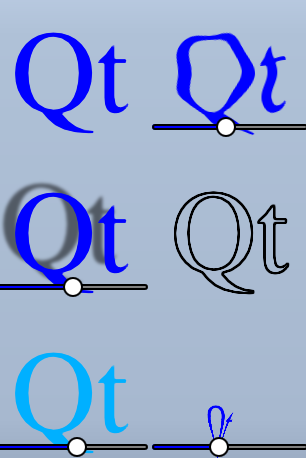

Qt Quick Examples - Shader Effects
A Qt Quick example demonstrating the use of shader effects.

This example demonstrates a couple of visual effects that you can perform with shaders in Qt Quick. It applies five different effects on a text and a couple of images. For more information, visit Important Concepts In Qt Quick - Graphical Effects
Running the Example
To run the example from Qt Creator, open the Welcome mode and select the example from Examples. For more information, visit Building and Running an Example.
Using ShaderEffect
The ShaderEffect type typically operates on other types, using a ShaderEffectSource:
ShaderEffectSource { id: theSource sourceItem: theItem }
In the above snippet, theItem is the ID of a complex QML object in the file.
ShaderEffects can use this ShaderEffectSource as a texture in their fragment shader:
fragmentShader: "content/shaders/wobble.frag.qsb"
In order to support multiple graphics APIs, not just OpenGL, the shader source is not embedded into QML. The referenced .qsb file is a pre-generated shader pack containing multiple variants of the shader code. The appropriate shader is then chosen by Qt Quick at run time, depending on the graphics API (Vulkan, Metal, Direct3D 11, or OpenGL) used at run time. The .qsb file is generated offline and is bundled with the executable via the Qt Resource System.
You can use any custom property on the ShaderEffect in your shader. This makes animated shader code very easy:
property variant source: theSource property real bend: 0 property real minimize: 0 property real side: genieSlider.value SequentialAnimation on bend { loops: Animation.Infinite NumberAnimation { to: 1; duration: 700; easing.type: Easing.InOutSine } PauseAnimation { duration: 1600 } NumberAnimation { to: 0; duration: 700; easing.type: Easing.InOutSine } PauseAnimation { duration: 1000 } } SequentialAnimation on minimize { loops: Animation.Infinite PauseAnimation { duration: 300 } NumberAnimation { to: 1; duration: 700; easing.type: Easing.InOutSine } PauseAnimation { duration: 1000 } NumberAnimation { to: 0; duration: 700; easing.type: Easing.InOutSine } PauseAnimation { duration: 1300 } }
ShaderEffects can also have a custom vertext shader. Setting the mesh property on ShaderEffect provides more vertices for you to manipulate, enabling more effects.
mesh: Qt.size(10, 10) vertexShader: "content/shaders/genie.vert.qsb"